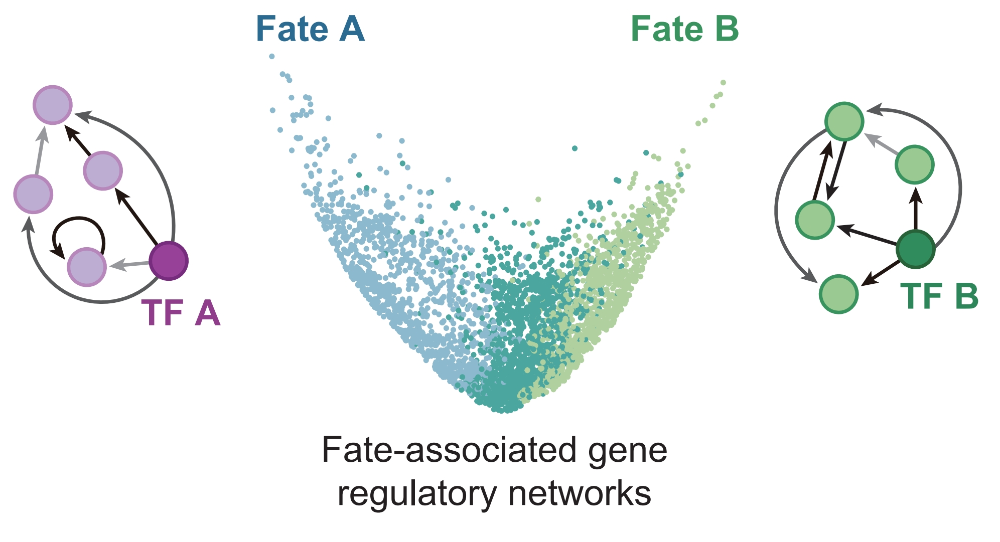
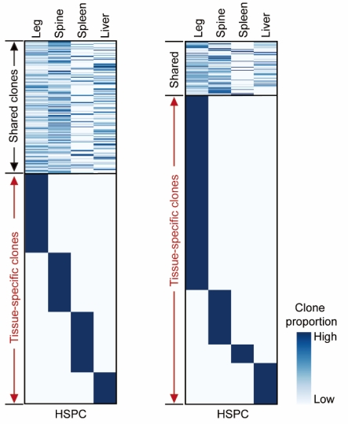
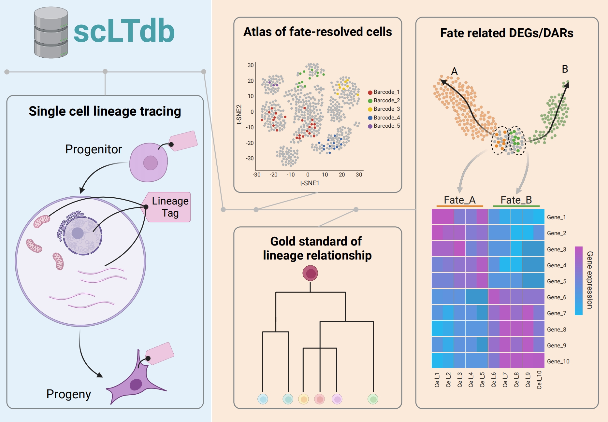
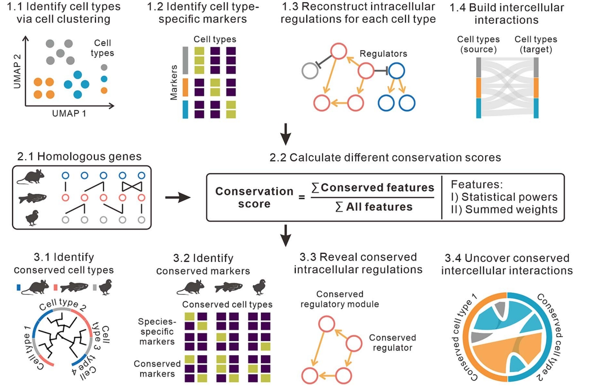
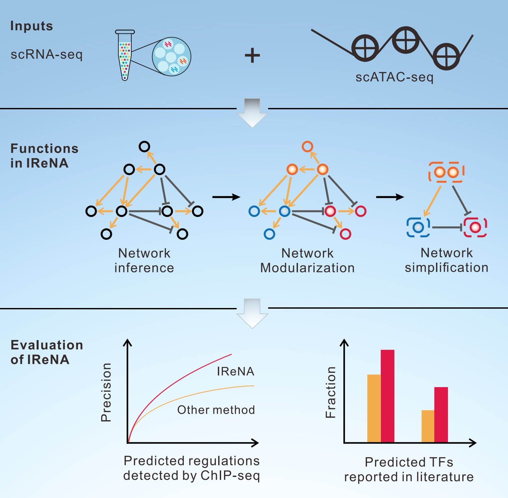
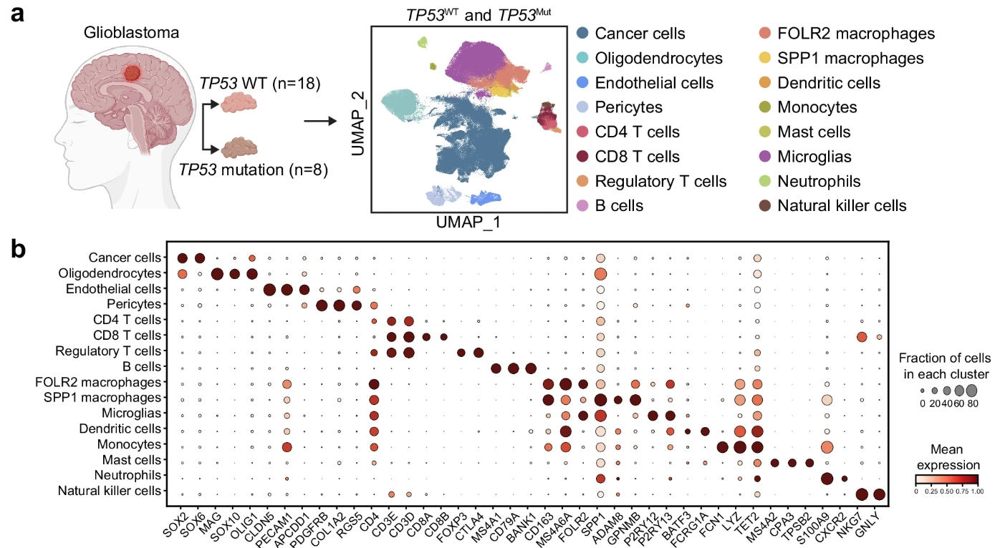

I am also an amateur bodybuilder with 140KG maximal weight for bench press, 190KG maximal weight for Deadlift, and 170KG maximal weight for Squat.
Machine learning / Single-cell genomics / Cell fate
Junyao Jiang 蒋俊尧
Computational Biologist at Westlake University, developing machine learning and single-cell/spatial genomics methods to decode cell fate decisions, reconstruct fate-resolved regulatory networks, and map developmental programs across species and tissues.
Professional path
Professional Experience in Computational Biology
- Incoming Postdoctoral Researcher at DANDRITE
- 2022.08 - 2026.06 Ph.D. in Biology, Systems and Synthetic Biology Program, Westlake University
- 2021.03 - 2022.06 Research Assistant, Guangzhou Institutes of Biomedicine and Health, Chinese Academy of Sciences
- 2020.12 - 2021.02 Bioinformatician Intern, Singleron Biotech
- 2020.12 - 2021.02 M.Sc. in Genomics and Bioinformatics, Chinese University of Hong Kong
Publications
Featured publications
* Co-first author. # Corresponding author.
Nature Cell Biology / Major revision

In vivo multimodal lineage tracing of mammalian development by DeepTrack barcoding
Co-first author
Single-cell multi-omics lineage tracing / Mouse embryogenesis / Fate-resolved GRN
Nature / Major revision

Uncovering the origins and functional features of hematopoiesis in extramedullary organs
Co-first author
Lineage tracing / Extramedullary hematopoiesis / EPO
Nucleic Acids Research 2024

scLTdb: a comprehensive single cell lineage tracing database
Co-first author
Single-cell and spatial genomics / Lineage tracing / Online resource
Briefings in Bioinformatics 2024

CACIMAR: cross-species analysis of cell identities, markers, regulations, and interactions using single-cell RNA sequencing data
Co-first author
scRNA-seq / Cross-species comparison / Conserved regulatory programs
iScience 2022

IReNA: Integrated Regulatory Network Analysis of Single-Cell Transcriptomes and Chromatin Accessibility Profiles
Co-first author
Single-cell multi-omics / Gene regulatory network / Inter-cell-type regulations
Cell Research 2025

Targeting necrotic lipid release in tumors enhances immunosurveillance and cancer immunotherapy of glioblastoma
scRNA-seq / Cell atlas / Glioblastoma / Cancer immunotherapy
Other publications
- Yunhui Kong*, Junyao Jiang*#, Weikang Kong, Sheng Qin#. DRCTdb: disease-related cell type analysis to decode cell type effect and underlying regulatory mechanisms. Communications Biology, Sep 2024. Co-first author and corresponding author.
- Ying Xin, Pin Lyu, Junyao Jiang, Fengquan Zhou, Jie Wang, Seth Blackshaw, Jiang Qian. LRLoop: Feedback loops as a design principle of cell-cell communication. Bioinformatics, July 2022.
- Dapeng Sun*, Xiaojie Gan*, Lei Liu*, Yuan Yang*, Dongyang Ding, Wen Li, Junyao Jiang, et al. DNA hypermethylation modification promotes the development of hepatocellular carcinoma by depressing the tumor suppressor gene ZNF334. Cell Death & Disease, May 2022.
Recognition
Awards
Doctoral National Scholarship, 2024.10. Top 1% PhD student in China.
Mentorship
Research mentoring
- Xing Ye: Undergraduate from University of Science and Technology of China, 2023.11-2024.06. Co-first author at scLTdb project.
- Zhi Chen: Undergraduate from Tsinghua University, 2025.07-2025.08. Summer research program.
- Jiayi Liu: MSc from Imperial College London, Research Assistant, 2025.10-Present.
Peer review
Journal service
- Nature (Co-Review)
- Nature Cell Biology (Co-Review)
- Communications Biology
- Archives of Computational Methods in Engineering
- BMC Bioinformatics
- BMC Genomics
- Scientific Reports